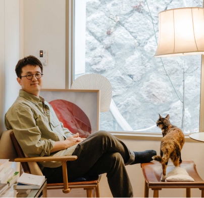
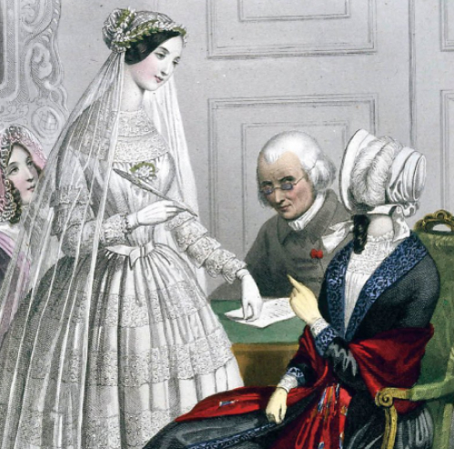
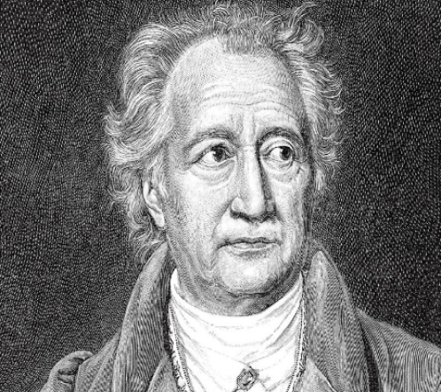
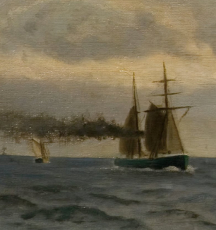

을유년
1945년 12월 1일
乙酉文化社
일본의 민족문화 말살정책으로 잃어버린 우리말과 영혼을
되살리고, 더불어 문화 발전에 기여한다는 일념으로 1945년
12월 1일에 창립한 을유문화사는 격동의 세월
속에서도
최초의 창립 정신을 이어왔습니다.
이달의
도서
을유문화사에서
발간한 도서목록입니다.
월간 을터뷰
을유문화사가 만난 사람들 이야기
-
화가
홍희정자연물과 인공물, 평범한 것들을 아름답게 만드는 회화 작업을 하고 있습니다. 고전 문학이라는 특성상 작가들의 역사나 깊이를 따라가면서, 제가 가진 색깔과 작가가 가진 색깔 그 어떤 것도 묻히지 않게 하려고 노력했던 것 같아요. 낡은 관념을 뒤로 하고 자신만의 발자취를 만들어 가는 책 속 주인공들의 영향을 많이 받았는데요. 유리 조각이라는 진취적인 물성과 거울, 그리고 책을 상징하는 한지를 사용해 어떻게 보면 관계성이 없고 이질적일 수 있는 것들을 조화롭게 표현하고자 했습니다.
자세히보기 -
영화감독
박찬욱행간의 감추어진 뉘앙스 같은 게 풍부하고,그런 것을 더 중시하는 작품이었어요. 이 영화는 제 작품 중에서도 행간의 감추어진 뉘앙스 같은 게 풍부하고, 그런 것을 더 중시하는 작품이었어요. 그래서 대사 한 줄 한 줄과 단어 하나 하나를 음미할 수 있게 했고, 대사 외에도 씬에서 다음 씬으로 넘어갈 때 생기는 생략과 비약이 있고, 교차 진행을 할 때는 서로 다른 장소에 있는 상황이 하나로 엮이는 것을 상상할 수 있게 했죠. 그것이 (이 영화의) 특징이니까 관객들이 거기서 매력을 느끼지 않았을까 생각합니다.
자세히보기 -

갤러리 클립 대표
정성갑갤러리가 작가와 컬렉터를 연결하는역할 한마디로 ‘연결하는사람’이라고 표현해요. 갤러리가 작가와 컬렉터를 연결하는 역할을 하는 것처럼, 한마디로 ‘연결하는 사람’이라고 표현하고 싶어요. 문화예술 기자로 20년 가까이 일한 경험으로 모더레이터, 토크 기획, 전시 기획을 하고 있습니다. 지은 책으로는 『집을 쫓는 모험』, 『건축가가 지은 집』 등이 있습니다.
자세히보기
시리즈
을유문화사의 연작 미리보기 입니다.
-
을유세계문학전집
136권. 오노레 드 발자크, 『결혼 계약』
프랑스의 대문호이자 90여 편에 이르는 장편 소설로 인간극 이라는 거대한 세계를 구축한 발자크는 풍속의 역사가로 불릴 정도로 다양한 주제를 작품에 담았다.특히 돈과 법은 발자크 소설의 주요 테마다. 소설로 인간극 이라는 거대한 세계를 구축한 발자크는 풍속의
-
#3. 통제할 수 있는 것과 통제해야 하는 것
#3. 통제할 수 있는 것과 통제해야 하는 것
내가 모든 것을 통제할 수 없더라도 어려움 속에서도 내 삶에 선한 영향력을 발휘할 수 있으며, 그렇게 함으로써 다른 사람들이 나를 자주 찾을 정도로 내가 매력적인 사람으로 남을 수 있음을 믿는 것이다. 어려움 속에서도 내 삶에 선한 영향력을 발휘할 수 있으며
-
#5. 내려놓고 있는 그대로 받아들이기
#5. 내려놓고 있는 그대로 받아들이기
내려놓는 것에서 행복을 얻는 것은 삶의 기술이 된다. 하지만 간과해서는 안 되는 것이 있다.즉 우리가 내려놓는 것은 점점 많아질 것이며, 점점 적어지기 때문에 그만큼 더욱 소중해질 것이라는 점이다. 우리가 내려놓는 것은 점점 많아질 것
-
을유세계문학전집
132권. 요한 볼프강 폰 괴테, 『서동시집』
서동시집에서 괴테의 눈에 비친 동방 시인들은 낙천적이고 현세 지향적이지만 궁극적으로는 깊은 동경심으로 가득 차 있고,지상에 속한 대상에게서 영원한 것을 이끌어 내는 존재들이다. 궁극적으로는 깊은 동경심으로 가득 차
-
을유세계문학전집
129권. 하인리히 하이네, 『하이네 여행기』
괴테가 여행기에서 고대 예술 작품 감상에 초점을 맞추었다면, 하이네는 나폴레옹의 신화화로 대변되는 프랑스 혁명정신, 나아가 모든 질곡에서 벗어나는 해방을 이야기하고 있다는 점에서 특별하다. 고대 예술 작품 감상에 초점을 맞추었다